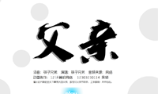

在这个机遇和挑战并存的年代，作为一个有理想有抱负的年轻一代。
没有人能够阻止我们向前。
我们都有自己的梦想，我们都渴望成功，但是那种敢想敢做，敢做敢担的精神，
却离我们越来越远。
世界每天都在飞速的变化，每天都有很多新的事物诞生也会有新的事物灭亡。
我们只不过是偌大宇宙中的一粒沙子，想成功靠努力真的还不够。
你要有挑战新事物的勇气，敢想敢做！
敢想敢做在此刻给我的内涵便是努力学习，勇于开拓。
2017年2月24日 山西大学商务学院社团
-
名称：羽毛球比赛海报
类别：photoshop图像处理
时间：2017-02-24 -
名称：电子信息学院院徽设计
类别：AI标志设计
时间：2017-02-24 -
名称：《致青春》班级宣传片
类别：会声会影X6视频处理
时间：2017-02-24 -

名称：父亲MTV
类别：FLASH动画制作
时间：2017-02-24
最新资讯
学习重要，还是经营人脉重要？
有一次在北大讲座，遇到一位学生问我，“老师，你说学习重要，还是经营人脉重要？”看着他一脸大杂烩的表情，我先拿出本子记下了这个问题，然后告诉他说，这是个比较大的话题，我会仔细写篇文章放在网上的。而后又补了一句，“相信我，所谓的人脉就算重要，也根本没他们说的那么重要”。 让我们细说从头。先动脑思考一下，你愿意与什么...
学生会主席说：学生会干部，经历过即可，没啥
学生会主席说：学生会干部，经历过即可，没啥 《职来职往》节目：一个应届毕业生去求职，自称是学生会干部，认识多少人，组织过多少活动……结果各位达人老师基本上都不怎么看重她。达人们说：从学生会走出来的学生干部骨子里透着一股清高和自傲，顽固听不得别人的意见…… 很多时候确实是这样，因为自己本身就做了三年的学生...

大学期间没能进入学生会，是不是就会比别人差呢？
大学期间没能进入学生会，是不是自己就会比别人差呢？很多同学，由于种种原因，没能够进入学生会，看到其他同学参加各种学生会、社团的活动，就开始怀疑自己，产生一些是不是自己比别人差啊，以后会不会混得不好之类的困惑。的确，从大范围以及自己自己看到的情况来说，进入学生会的同学是比其他一些同...
在大学入党真的有那么重要吗？
在大学入党真的有那么重要吗？ 南山子说： 不重要，而且一点也不重要。如果你想在外企、私企部门发展，或者出国，那就没有任何必要。即便愿意在政府部门、国企或社会团体发展，那么也没有什么必要。 现在早已不是上个世纪八九十年代，党龄几乎没有意义，火线入党然后提干，甚至提到高干才入党，已经不是什么新鲜事...
学生会部长：用亲身经历还原一个真实的学生会
学生会，是现在学校中的组织结构之一，是学生自己的群众性组织，是学校联系学生的桥梁和纽带。是每个学校不可缺少的部门，它是提倡自我服务，自我管理，自我学习的学生组织，为学校学生和老师提供无偿服务的部门。引导同学努力做到身体好、学习好、工作好，德、智、体、美、劳全面发展，成为有社会...
在大学参加学生会、社团，让你有什么收获？
大学期间没能进入学生会，是不是自己就会比别人差呢？很多同学，由于种种原因，没能够进入学生会，看到其他同学参加各种学生会、社团的活动，就开始怀疑自己，产生一些是不是自己比别人差啊，以后会不会混得不好之类的困惑。的确，从大范围以及自己自己看到的情况来说，进入学生会的同学是比其他一些同...